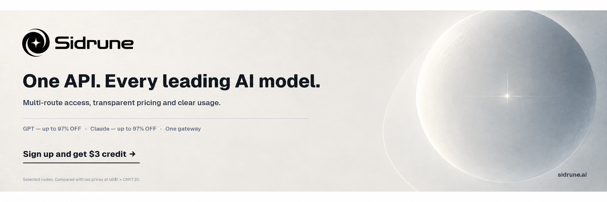

The browser video editor agents can drive.
Open FableCut Studio, pick a folder of clips, and let Claude or ChatGPT cut your video while you watch. Nothing to install, and your footage never leaves your disk.
Free and open source. Works with Claude Code, claude.ai, ChatGPT and any MCP client.

Sponsor
Sidrune AI
One API for GPT, Claude, and other leading AI models. Sign up and get $3 in API credit.
sidrune.aiCut by an agent. No hand edits.
PromptCut a teaser from these three clips. Title it CUT BY AN AGENT, then give it a noir finish.
PromptPut the footage inside the word SUMMIT, open a split screen, and orbit text around the climber.
PromptNeon city in 2:3. Glitch cuts and a glowing title that waves.
PromptA 9:16 street-food reel. Punch in on every beat and add pill captions.
PromptA widescreen surf trailer. Cut every bar, slow down the turn, warm film grade.
PromptSquare coffee promo. Draw a ring on, caption the beats, end on a lower third.
PromptBlack and white, 4:3. Slow dissolves and a quiet title.
PromptA vertical night-city reel cut to the beat, with a title that cycles fonts.
PromptRainy city, soft crossfades, a caption that fills in word by word.
PromptCut the dancers on the beat and slow into the last pose.
PromptMotorcycle reel. Letterbox bars, whip cuts, a speed ramp on the approach.
Footage from Pexels, music from Pixabay.
Your agent connects with one link.
The same editor, in your browser. Your clips never leave your disk.
- Open a folderPick one with your clips, or start fresh.
- Nothing uploadsClips and
project.jsonstay in the folder. - Connect your agentPaste the link into Claude Code, claude.ai or ChatGPT.
- ExportAn
.mp4lands inexports/.
Edit the file. Watch the cut change.
Loading the editor
Rather run it on your machine?
Full setup guide// In Claude Code. No path, no config.
/plugin marketplace add ronak-create/FableCut
/plugin install fablecut@fablecutDownload the bundle and open it. Claude Desktop installs the server for you, no path needed.
Download fablecut.mcpbcodex mcp add fablecut -- \
npx -y fablecut mcpgemini mcp add -s user fablecut \
npx -y fablecut mcp// ~/.cursor/mcp.json
{
"mcpServers": {
"fablecut": {
"command": "npx",
"args": ["-y", "fablecut", "mcp"]
}
}
}// opencode.json
{
"mcp": {
"fablecut": {
"type": "local",
"command": ["npx", "-y", "fablecut", "mcp"],
"enabled": true
}
}
}amp mcp add fablecut -- \
npx -y fablecut mcpCut something in the next minute.
Open Studio in your browser and point it at a folder of clips. Prefer your own machine? One command runs the same editor locally: Node 18 or newer, ffmpeg optional.
npx -y fablecutThen open localhost:7777. MIT licensed, zero npm dependencies.